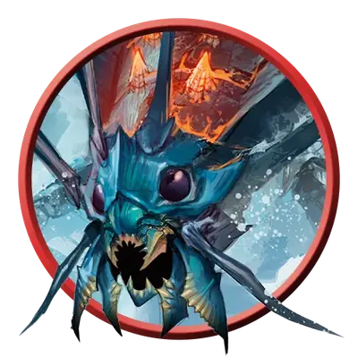

Молодой ремораз
Young Remorhaz
Большое Чудовище, без мировоззрения

Класс Защиты 14 Инициатива +1 (11)
Хиты 93 (11к10 + 33)
Скорость 30 футов, Копания 20 футов
| мод | спас | ||
|---|---|---|---|
| СИЛ | 18 | +4 | +4 |
| ЛОВ | 13 | +1 | +1 |
| ТЕЛ | 17 | +3 | +3 |
| мод | спас | ||
|---|---|---|---|
| ИНТ | 3 | −4 | −4 |
| МДР | 10 | +0 | +0 |
| ХАР | 4 | −3 | −3 |
Иммунитеты Огонь, Холод
Чувства пассивное Восприятие 10, Чувство вибрации 60 футов
Языки нет
Опасность 5 (1 800 опыта; БВ +3)
Особенности
Раскалённая аура. В конце каждого хода ремораза каждое существо в 5-футовой Эманации, исходящей от ремораза, получает 11 (2к10) урона Огнём.
Действия
Укус. Бросок рукопашной атаки: +7, досягаемость 5 фт. Попадание: 15 (2к10 + 4) Колющего урона плюс 13 (3к8) урона Огнём.
Бонус мастерства +3
Среда обитания Арктика
Сокровища Отсутствуют
Реморазы
Раскалённые арктические многоножки
Реморазы — это похожие на гигантских многоножек кошмары, что прокапываются сквозь снег и лёд, подстерегая мелких существ, забредших в их ледяные владения.
Молодые реморазы сжигают и пожирают любую добычу, которую способны догнать и одолеть.